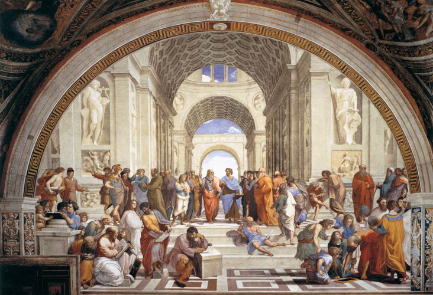

Page d'accueil

Bienvenue à la page d'accueil de LexiSophos. Ici vous trouverez de nombreux textes
philosophiques du monde classique, traduits ou en Anglais ou en Français. Une calculatrice
est même incluse pour des raisons que j'ignore.
Souhaitez-vous :
Consulter la page des divers philosophes ;
Envoyer un courriel au créateur de ce site web nikolaiverner@gmail.com
Effectuer un calcul ;
« Être sage dans la prospérité, c'est savoir marcher sur la glace. »
Page mise à jour le 20/05/20